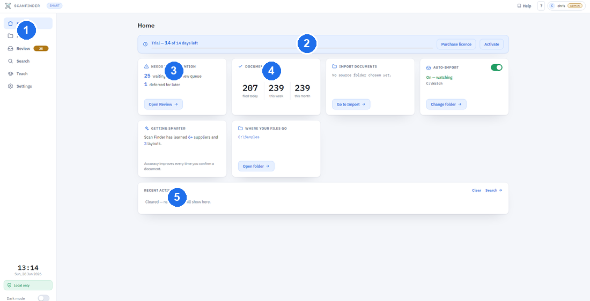

Getting Started
A quick tour of opening Scan Finder, signing in, and finding your way around the main screen.
Opening the app and signing in
- Open Scan Finder from your desktop or Start menu.
- If your copy asks you to sign in, enter your username and password and click Sign in.
- The first time the app is ever used, it will ask you to create an admin account — keep these details safe, as the admin can manage everyone else's access.
What you can do depends on your role:
- Admin — everything, including Settings and teaching new layouts.
- Edit — import, review and file documents.
- Read only — search and view filed documents.
First-time setup
On a brand-new installation, a short setup wizard runs once to get you going. It asks for the things Scan Finder needs and then takes you to the main screen.
- Output folder — where your tidy, filed documents will be saved. This is the only required step; a sensible default is suggested and you can change it.
- Appearance — choose a light or dark theme (you can change this later in Settings).
- Performance — how fast to process and how many documents to handle at once. The defaults are fine for most computers.
Existing installations skip this wizard. An admin can run it again any time from Settings → General → Re-run setup.
The home screen
When you open Scan Finder you land on the home screen. It's where you start a run or jump to any other area.

The left nav rail jumps to any area; the cards in the middle keep you on top of things. They’re grouped into a top row (what needs doing and how things are going) and a Files & folders row:
- Navigation rail — Home, Import, Review (with a badge for waiting documents), Search, Teach and Settings. A clock and a dark-mode toggle sit at the foot.
- Trial / licence — your status, with buttons to purchase or activate a licence.
- Quick find — search your filed documents straight from the home screen.
- Needs your attention — documents waiting in Review, set aside, or that couldn’t be read.
- Documents filed — how many you’ve filed today, this week and this month.
- Filed automatically — how much Scan Finder filed for you without review (it keeps getting better).
- Getting smarter · Did you know — what it has learned, and a rotating tip.
- Auto-import · Import · Where your files go · Storage · Backup — folder shortcuts and status, including free disk space and when you last backed up.
- Recent activity — the documents you filed most recently.
Don’t want a card? Turn any of them on or off under Settings → Appearance → Home screen — the home screen updates straight away.
Processing mode: Fast or Smart
The badge near the top shows how Scan Finder reads your documents. Click it to change the mode in Settings.
- Fast — reads documents almost instantly. Great for familiar, good-quality scans.
- Smart — the default. A careful, thorough read that suits everyday documents.
You can switch between them at any time; it only affects documents processed afterwards.
Reviewing is much quicker with the keyboard. In Review, Ctrl+Enter confirms & files, Space marks reviewed, and ↑/↓ move between documents. See the Keyboard shortcuts page for the full list.
Ready to bring documents in? Head to Importing Documents.